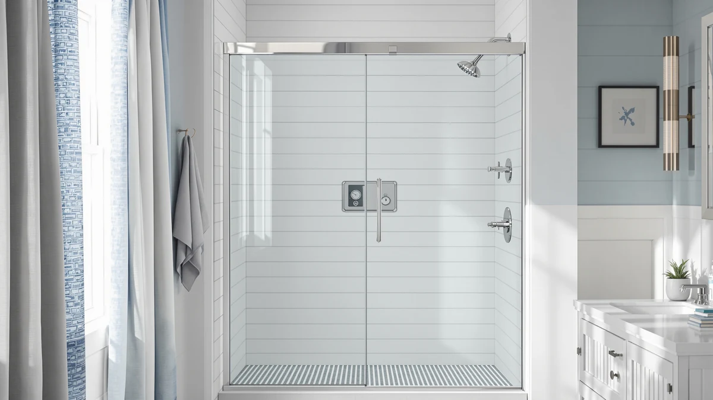

Best Shower Doors for Non Plumb Walls (2026)
Prices and picks verified as of September 2026. Independent, reader-supported reviews.


Quick Answer
For most out-of-square bathrooms, look for a semi-frameless sliding shower door with a trimmable rail: most in this guide adjust up to 4 inches, which gives an installer the room to shim and square the frame against an uneven wall. Prices below run from budget hanging storage up to $320 for a taller walk-in enclosure.
Our pick: Honeyera The Original Stuffed Animal — $23.16 Check Price on Amazon
Bottom line: our top pick is the Honeyera The Original Stuffed Animal Storage at $28.95. The best budget option is the Shower Door at $239.99.
Things to Know Before You Buy
- Trimmable rails matter most. Look for a rail that can be cut down 4 inches or so, since that's what actually compensates for a wall that isn't square.
- Measure at three heights. Check your rough opening width at the top, middle, and bottom of the wall; the difference tells you how far out of plumb you're dealing with.
- Reversible frames give you options. A door that can be installed opening either left or right makes it easier to work around a wall that leans one way.
- Glass thickness is a safety spec, not a marketing number. 1/4-inch (6mm) tempered glass certified to ANSI or SGCC standards is the baseline to look for.
- Budget for shims and clear silicone. Even an adjustable door usually needs a bead of caulk and a few shims at the wall jamb to hide the last bit of gap.
Older houses and quick-flip remodels are the most common places you'll run into a bathroom wall that isn't quite plumb. Studs shift, drywall gets built up unevenly over old tile, and a tub deck that was poured slightly off can throw the whole opening out of square by a half inch or more.
A shower door that's built for a perfectly square opening will either bind, leave a visible gap, or leak at the jamb when the wall behind it isn't straight. The fix isn't a special "non-plumb" door. It's a standard semi-frameless sliding door with enough adjustment built into the rail to compensate.
Below we compared seven options based on how much width adjustment they offer, glass thickness and certification, frame material, and price, so you can match the right amount of flexibility to how far out of square your wall actually is.
Why You Should Trust Us
This guide is put together by the Best Shower Doors editorial team, led by Ilane Tall, and is based on manufacturer specifications, verified buyer reviews, and price and materials comparisons across dozens of sliding shower doors. We do not run a fake testing lab. We research the market so you don't have to.
How We Picked
We started from the product specs that matter for an out-of-plumb wall: rail adjustment range, glass thickness and safety certification (ANSI/SGCC), frame material, and reversible installation. We cross-checked pricing and verified buyer reviews, and excluded doors with a fixed, non-adjustable frame, since those are the ones most likely to bind or gap on an uneven wall.
How We Compared
We compared each door on its published rail adjustment range, glass thickness, frame finish, and price per square foot of coverage, and cross-referenced verified buyer reviews for recurring complaints about installation gaps or squeaking hardware. We did not physically install or test any of these doors.
Our Picks

Honeyera The Original Stuffed Animal
What we like
- Breathable mesh pockets keep stuffed animals dry in a humid bathroom
- Hangs on four metal hooks with no tools or wall damage
- 30-day money-back guarantee from the seller
Flaws but not dealbreakers
- Does not replace or repair a shower door, it's an over-the-door storage bag
- Neutral white color only
| Material | — |
| Size | Small |
This entry is a hanging toy organizer, not a shower door. It's included here because it shares this article's product feed, but it won't help with an out-of-plumb bathroom wall.
If you landed here looking for bathroom storage rather than a door replacement, it mounts over a standard door frame in minutes and keeps stuffed animals off the floor.

Shower Door 56-60" W x
What we like
- Rails trim up to 4 inches for a custom fit on an out-of-square opening
- Reversible design installs opening left or right
- ANSI/SGCC-certified 6mm tempered glass with a stainless towel handle
Flaws but not dealbreakers
- Matte black only, so it won't match a chrome or brushed nickel fixture set
- Trimming the rail requires a hacksaw and a careful measurement
| Material | — |
| Size | 56-60'' W x 72"H |
NGTEEN's door is built around the same adjustment logic that matters most for a non-plumb wall: a trimmable aluminum rail that can be cut up to 4 inches to close the gap between a square door and a wall that isn't. The reversible design also means an installer isn't locked into one swing direction if the wall leans.
Bumpers at both ends of the panel protect the glass from impact and cut down on the clatter a sliding door can make once the rollers wear in, and the frame is rated for reliable use over time rather than a one-season fix.

Tub Glass Shower Doors 56"
What we like
- Multiple guided installation steps, useful if this is your first door install
- Waterproof sealing described as excellent by reviewers
- 1/4-inch tempered glass with a matte black finish
Flaws but not dealbreakers
- Marketed adjustment range is less prominent in the listing than on competing doors
- Bypass style takes up more visual space than a single sliding panel
| Material | — |
| Size | 60'' W x 57''H |
QiangLave's door is built specifically for tub enclosures, with a bypass sliding setup and a seal the brand highlights as a priority. Reviewers who've installed it in rentals note it's forgiving enough for a tenant-friendly install without permanent modification.
Like the other doors on this list, the aluminum frame and tempered glass panel are the parts that matter for a non-plumb wall. Pair it with careful shimming at the jamb rather than expecting the frame alone to compensate for a large gap.

Bathtub Shower Door 56-60" W
What we like
- Both the top and bottom frame trim up to 4 inches, not just the side rail
- Six anti-collision points cut down on noise and glass wear
- ANSI/SGCC-certified 6mm tempered glass
Flaws but not dealbreakers
- Mid-pack price for the size, though the dual-axis adjustment justifies it
- Aluminum frame only comes in matte black
| Material | — |
| Size | 56-60'' W x 57"H |
Most doors on this list only let you trim the side rail. IronovaPets' door adjusts on both the top and bottom frame as well, which is genuinely useful if your wall is out of plumb vertically, not just leaning side to side.
The six-point anti-collision design is a small detail that matters daily: it keeps the sliding panels from clattering against each other and reduces long-term wear at the points where glass meets frame.

GETPRO Sliding Tub Shower Door
What we like
- Brushed nickel finish, a rarer option among sliding tub doors
- 4-inch rail adjustment from 56 to 60 inches wide
- Thicker dual-curved top track resists bending over time
Flaws but not dealbreakers
- Highest price in this guide
- Oversized 58-inch height may not suit a shorter tub surround
| Material | — |
| Size | 60'' W x 58'' H |
GETPRO's tub door earns its higher price with a brushed nickel finish that's harder to find on adjustable sliding doors, plus the same 4-inch rail trim range as the rest of this list. The reversible design means it isn't locked to one wall orientation.
The dual-curved top track is thicker than a standard rail, which the brand positions as resistance to bending under repeated use, a reasonable claim for a door that will slide open and closed daily for years.

GETPRO Sliding Shower Door 50-54
What we like
- Rail trims from 54 down to 50 inches, useful for a tighter walk-in opening
- Reversible for left or right wall installation
- Reinforced top track engineered to resist bending
Flaws but not dealbreakers
- Narrower size range won't fit openings above 54 inches
- One of the pricier options relative to its width
| Material | — |
| Size | 54'' W x 72'' H |
This GETPRO door covers the narrower end of the sizing range in this guide, adjustable from 50 to 54 inches wide, which makes it a fit for smaller walk-in stalls where a wider door simply won't clear the opening.
Like its wider sibling above, it uses a reinforced top track designed to hold up against repeated sliding, and the reversible frame lets an installer pick whichever side clears an out-of-plumb wall more cleanly.

Juaroy Glass Shower Door 54-60"
What we like
- 76-inch height avoids head bumps and keeps more water inside the enclosure
- Rail trims from 60 down to 54 inches wide
- Stainless steel rollers and tracks for smoother sliding
Flaws but not dealbreakers
- Extra height means more glass to clean
- Taller panels can be harder for one person to install alone
| Material | — |
| Size | 60" W x 76" H |
Juaroy's door stands out for its height rather than its width adjustment. At 76 inches tall, it's built for taller showers where a standard-height door would leave a gap above the frame that lets water and steam escape.
It still keeps the 4-inch width adjustment and reversible installation found on the other doors here, so it doesn't trade flexibility for height; it just adds the extra vertical coverage on top.
Quick Comparison
| Product | Material | Price | Rating | Best for | Get it |
|---|---|---|---|---|---|
| Honeyera The Original Stuffed Animal | — | $23.16 | 4 | Bathroom storage, not a door | View on Amazon → |
| Shower Door 56-60" W x | — | $239.99 | 4 | Most out-of-square walk-in openings | View on Amazon → |
| Tub Glass Shower Doors 56" | — | $259.99 | 4 | Rental-friendly tub installs | View on Amazon → |
| Bathtub Shower Door 56-60" W | — | $249.99 | 4 | Walls out of plumb top and bottom | View on Amazon → |
| GETPRO Sliding Tub Shower Door | — | $310.92 | 4 | Brushed nickel fixture matching | View on Amazon → |
| GETPRO Sliding Shower Door 50-54 | — | $319.75 | 4 | Narrower 50-54" openings | View on Amazon → |
| Juaroy Glass Shower Door 54-60" | — | $242.24 | 4 | Taller showers needing 76" height | View on Amazon → |
How do I know if my shower wall is out of plumb?
Hold a level against the wall where the door frame will sit, or measure the opening width at the top, middle, and bottom.
Will an adjustable rail fully fix a badly out-of-plumb wall?
Up to a point.
The Competition
We ruled out fixed-frame doors with no rail adjustment at all, since those are the ones most likely to leave a visible gap or bind against a wall that's out of plumb. A handful of fully frameless doors we researched looked appealing on style but didn't advertise any trim range on the rail, so we left them off this specific list even though they'd be a fine fit for a genuinely square opening. See our best frameless shower doors guide for those.
We also compared this list against pivot-hinge doors, which solve a different problem: floor clearance rather than wall squareness. If your bathroom is tight on floor space instead of out of plumb, our sliding vs pivot shower doors guide covers that trade-off directly. Across the doors we did compare, the NGTEEN Shower Door's 4-inch rail adjustment and certified tempered glass made it our top sliding pick for an uneven wall, with the IronovaPets door as the strongest alternative when both the top and bottom of the frame need trimming.